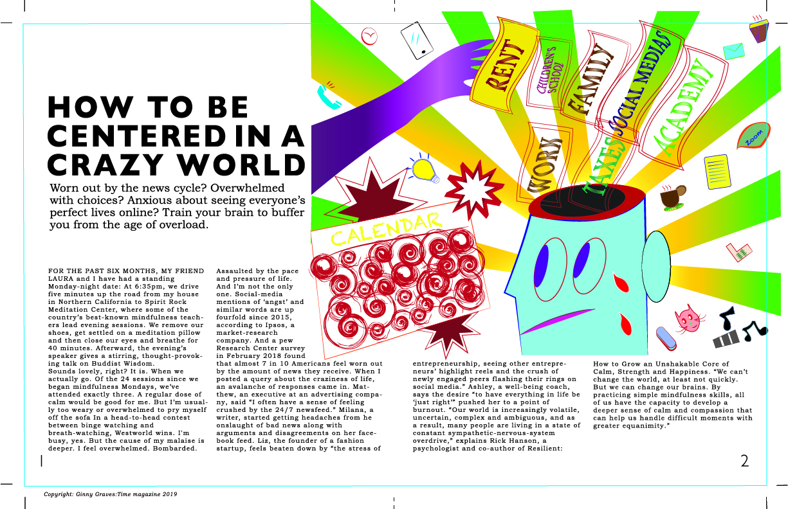
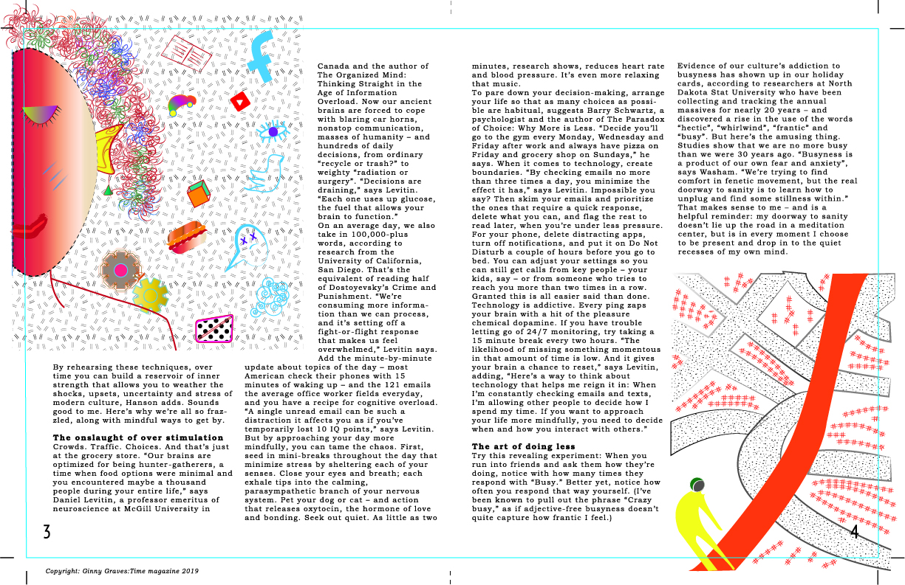

Technical Draw
The objective in this piece was to create three hand-drawn illustrations that convey the idea of the magazine article.


The objective in this piece was to create three hand-drawn illustrations that convey the idea of the magazine article.